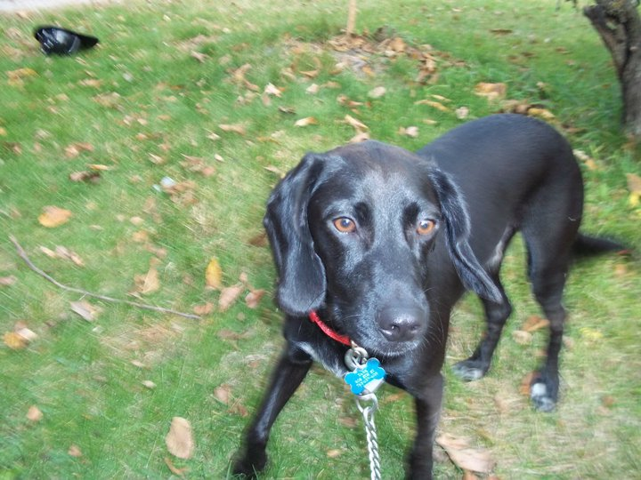
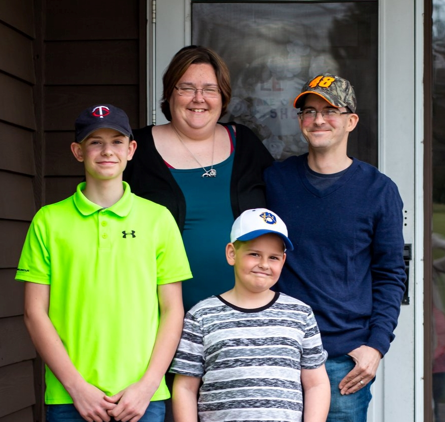
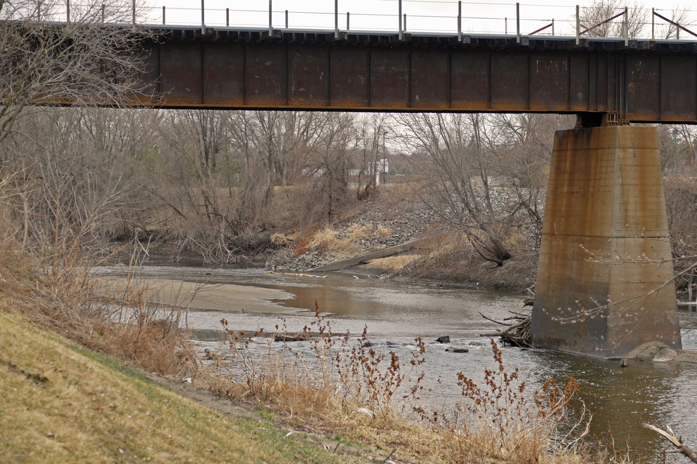

Hello, my name is George. I am 39 years old. I grew up in a little town in Minnesota. I work for a contruction company doing house remodeling. In my spare time i enjoy playing with my kids, mountain biking, playing video games, and building plastic models. I am also a big nascar fan.

I graduated from Delano High School in 2001. In 2004 I received my certification for PC Repair. I graduated from Rasmussen College in December 2013, and I have my AAS in Information Systems Management with a specialization in Web Programming. It has been my lifelong goal to open my own computer repair shop to serve the local community, and the surrounding areas.

I met my wife while I was working at McDonalds in 2004. We have two boys. Our oldest is 16, and our youngest is 12. I have 4 sisters and 7 brothers. I am the youngest of them all. To give you an idea of how big my family is, I was born a great uncle. We currently live in Buffalo,mn and we couldn't be happier.

I was born and raised in a little town called Delano,mn. We lived right off the highway. We had a river in our backyard so i did a lot of fishing in the summer.
Thanks for visiting my site!
Dont forget to visit me on twitter and like me on Facebook!
twitter FacebookEmail: jaydensdad2006@gmail.com
page modified by George Krause © 2022